1.6.1
해싱 개념 & 기본 용어
- 해싱 개념, 기본 용어, 함수 (중간제곱함수, 제산함수 등)
- 오버플로 처리 (선형 주소법, 체인법 등)
해싱 개념 & 기본 용어
- 해싱의 기초
- 해싱 : 원하는 킷값을 가지는 테이블 항목을 검색하기 위해 특정한 변환 함수를 이용하여 킷값을 항목의 주소로 직접 바꿔서 검색하는 방법
- 공부 순서 : 개념(용어 多) → 해시 함수(계산하는 방법) → 버킷 오버플로 해결 방안
- 장점 : 탐색, 삽입, 삭제 시 충돌이나 오버플로가 생기지 않으면 T = O(1) (O(c)가 평균)
- 단점 : 충돌, 군집 발생
- 충돌 : 서로 다른 두 개 이상의 명칭이 해시 함수에 의해 동일한 주소로 변환되는 경우 ('동의어'에 의한 충돌)
- 오버플로 : 충돌이 많아져 슬롯의 개수만큼 충돌이 생기면 빈 슬롯이 소진되어 오버플로 발생
- 해싱 : 원하는 킷값을 가지는 테이블 항목을 검색하기 위해 특정한 변환 함수를 이용하여 킷값을 항목의 주소로 직접 바꿔서 검색하는 방법
- 해시 테이블
- 해시 테이블 ht : ht[0] ~ ht[n−1]의 버킷으로 구성되고, 각 버킷은 여러 슬롯(slot1, slot2 …)을 가짐
- 해싱 함수 : 식별자 x → f(x) = α (키값을 계산하여 인덱스를 내놓는 함수) → 주소 α = ht[i]
- 식별자 밀도 (identifier density) : n / T (n = 실제 사용(저장)된 식별자 개수, T = 가능한 식별자 개수)
- 적재 밀도 (loading density) : n / sb (s = 각 버킷의 슬롯 수, b = 버킷의 수, sb = 방의 수)
- 가상 이상적 테이블 : n = b (각 버킷에 1개의 식별자가 있는 경우)
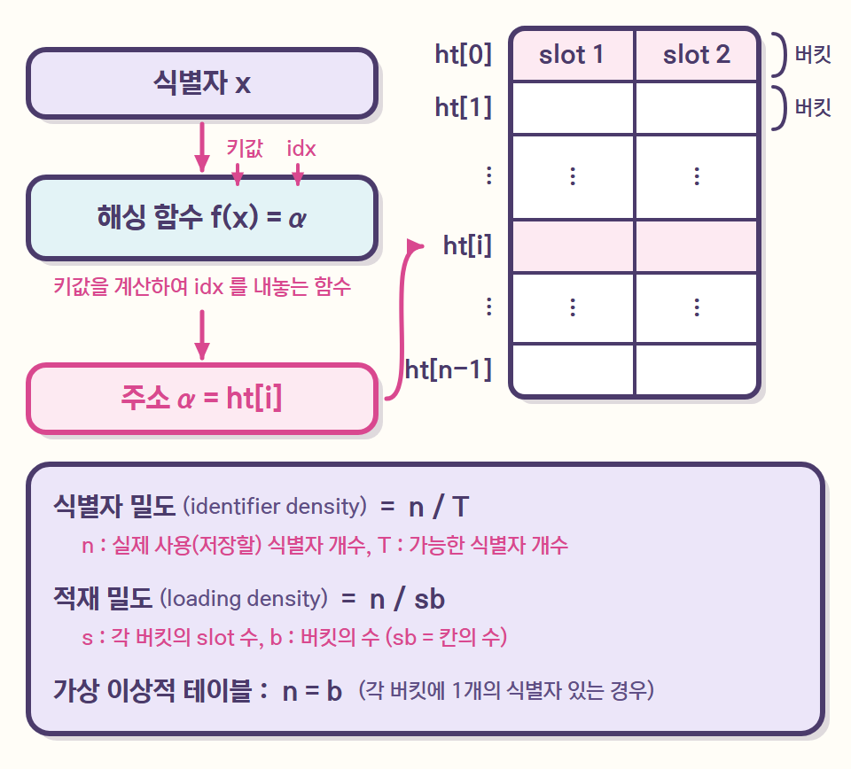
해싱 함수
- 해싱 함수 적용 과정
- 1) 문자 자료로 입력된 레코드 키를 적당한 수치의 입력 값으로 바꿈
- 2) 정리된 입력 값에 대해 해싱 함수를 적용하여 주소 계산
- 3) 계산된 주소가 해시 테이블의 정해진 범위 값이 아니면 조정
- 균일 해시 함수 : b개의 버킷 각각에 임의의 k가 대응될 확률이 모두 같은 함수
- h(k) = i 가 될 확률 = 모든 버킷 i에 대해 1/b
- 해싱 함수의 종류
- 제산 함수 : 가장 기초적인 방법. %를 사용하여 주소 계산 (key % M → 나머지 값 산출, M = 방 개수)
- 레코드 값 = key, 양의 정수 M, 해싱 함수 = h 일 때 h(key) = key mod M (버킷 주소 범위 : 0 ≤ h(key) < M)
- M값에 따라 버킷 수가 결정되므로 적당한 값 선정이 중요 (충돌을 최소화하기 위해)
- M = 2¹ 이면 버킷 주소의 범위는 0 ~ (2−1) : 변수의 끝 1비트만 표시됨, M = 2² 이면 끝 2비트만, M = 2³ 이면 끝 3비트만 표시됨
- ∴ 해시 테이블의 크기보다 약간 작은 소수를 M으로 선택하는 것이 좋음
- 문제 : 홀수, 짝수에 대한 군집 발생 → 해결 : i = (i + α) % TABLE_SIZE 에서 α와 TABLE_SIZE가 서로소 (TABLE_SIZE나 α 값이 소수(prime number))
- 서로소 : 1 이외에 공약수를 갖지 않는 둘 이상의 양의 정수 (예: 7 & 13)
- 소수 : 1과 자기 자신만으로 나누어 떨어지는 1보다 큰 양의 정수
- 중간제곱 함수 (mid-square) : key × key 를 계산해 결과 값의 가운데 자리를 주소로 사용
- 키값을 제곱하면 결과 값의 중간 비트들은 키값의 모든 비트들로부터 영향을 받으므로 버킷 주소가 고르게 분포될 가능성 높음
- 버킷의 주소를 얻기 위해 r bit를 사용하면 → 테이블 크기 = 2ʳ
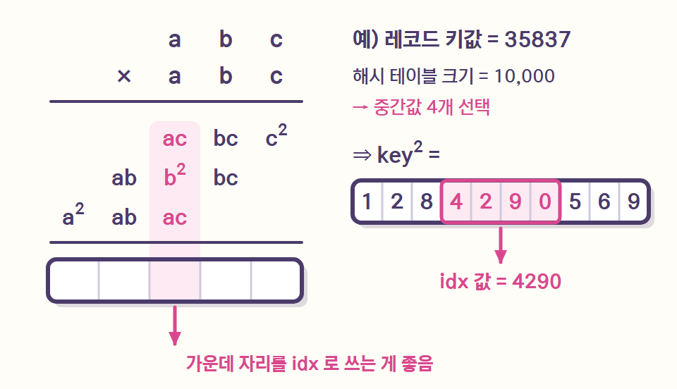
- 접지 함수 (folding) : 레코드 키를 마지막 부분을 제외한 모든 부분의 길이가 동일하게 여러 부분으로 나누고, 이들 부분을 모두 더하거나 XOR 연산하여 해시 테이블의 홈 주소로 이동하는 방법
- 이동 접지 (shift folding) : 각 부분의 값을 계산하기 위해 마지막을 제외한 모든 부분을 이동시켜 최하위 비트(LSB)가 마지막 부분의 자리와 일치하도록 우측 끝을 맞추어 더한 값을 홈 주소로 함
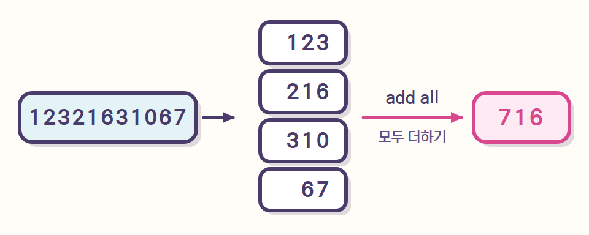
- 경계 접지 (boundary folding) : 원래의 키값을 여러 부분으로 나눈 후, 나누어진 각 부분의 경계선을 접어 정렬하고 같은 자리에 위치한 수를 더함
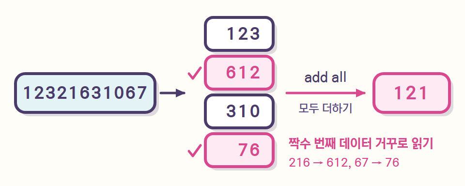
- 이동 접지 (shift folding) : 각 부분의 값을 계산하기 위해 마지막을 제외한 모든 부분을 이동시켜 최하위 비트(LSB)가 마지막 부분의 자리와 일치하도록 우측 끝을 맞추어 더한 값을 홈 주소로 함
- 숫자 분석 함수 : 키를 구성하는 수들이 모든 키들 내에서 각 자리별로 어떤 분포를 가지고 있는가를 조사하여 비교적 고른 분포를 보이는 자릿수를 필요한 만큼 선택해 레코드의 홈 주소로 사용 (대표 위치를 선정하여 주소 계산)
- 정적 파일(파일을 구성하는 모든 레코드 키값이 알려진 경우)에 유리
- 동적 파일(레코드의 삽입, 삭제가 빈번한 경우)에 불리 (새로운 레코드가 입력되어 키의 분포 상태가 변하게 되면 그때마다 키값의 분포를 다시 조사해야 하므로)
- 제산 함수 : 가장 기초적인 방법. %를 사용하여 주소 계산 (key % M → 나머지 값 산출, M = 방 개수)
오버플로 해결 방법
- 오버플로 해결 방법 한눈에
- 탐색 횟수 : 몇 번 만에 찾았나?
- 충돌 횟수 : (몇 번 만에 − 1)번 (1번 만에 찾은 것은 충돌 횟수 0)
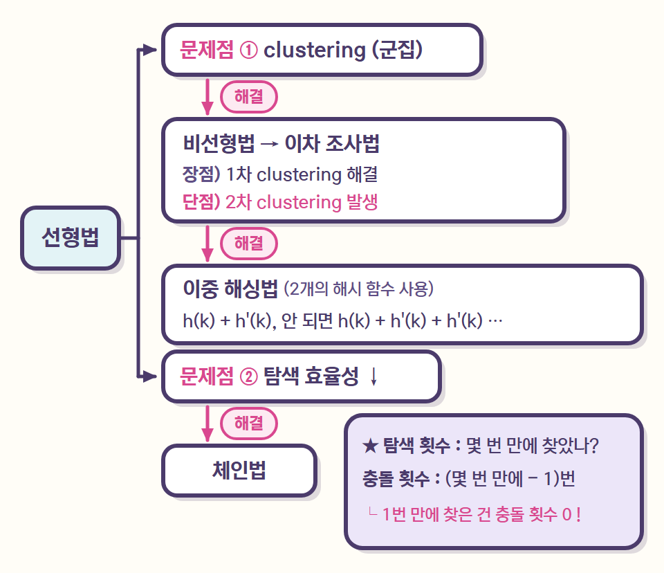
- 선형 개방 주소법 (선형 탐색법)
- 가장 기본적인 방법. 충돌 발생 시 그 위치로부터 비어 있는 다른 버킷을 찾아 그곳에 저장
- 해시 테이블은 1차원 배열
- 충돌을 일으킨 key + 1 해서 저장 : H1(key) = H0(key) + 1 (저장 불가능하면 계속 +1), Hi(key) = H0(key) + i
- 단점 1) clustering 군집 : 레코드 값들이 해시 테이블의 어느 곳으로 편중되는 현상 → 2차 검색법
- H0(key)가 해시 테이블의 마지막 주소인데 충돌이 발생한 경우 : 마지막 주소와 처음 주소가 원형으로 연결되어 있다고 생각
- HASH_TABLE_SIZE = n 일 때 테이블의 마지막 주소 = n − 1 → i번째 후속 주소 Hi(key) = (H0(key) + i) mod n
- h1(key) = h0(key) + α 를 이용하여 군집성 제거 (α값의 선택이 매우 중요)
- 단점 2) 불필요한 탐색 과정을 포함할 수 있음 (탐색 효율성 낮음) → 체인법
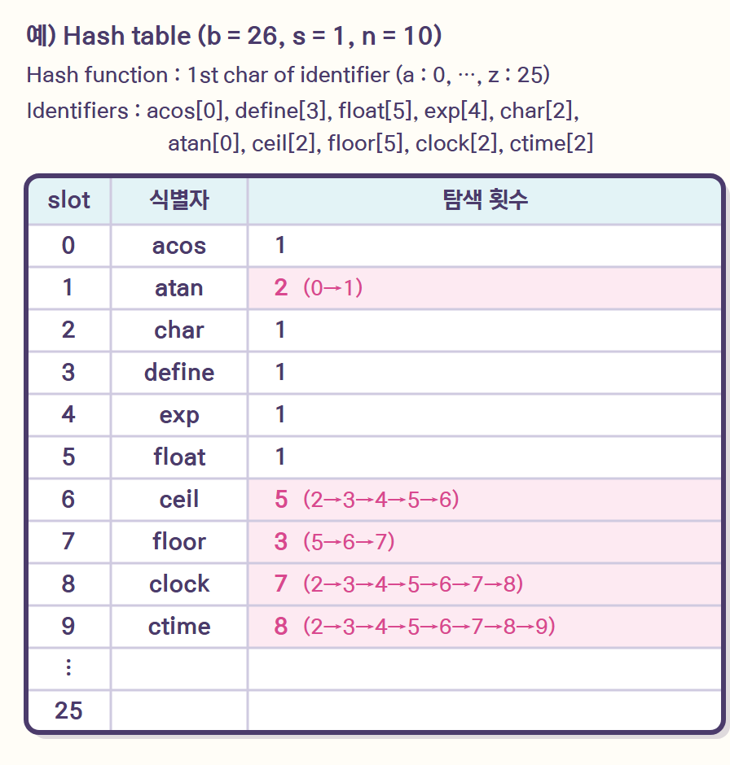
| 선형 조사법 삽입 | 선형 조사법 탐색 |
|---|---|
| void linear_insert(element item, element ht[]) { int i, hash_value; hash_value = hash(item.key), i = hash_value; while (strlen(ht[i].key)) { if (!strcmp(ht[i].key, item.key)) { fprintf(stderr, "duplicate entry\n"); exit(1); } i = (i+1) % TABLE_SIZE; if (i == hash_value) { fprintf(stderr, "the table is full\n"); exit(1); } } ht[i] = item; } | element* search(int k) { /* 선형 조사법 해싱 테이블 ht (각 버킷은 한 슬롯 가짐)에서 k 탐색 이 키를 가진 쌍을 발견하면, 그 쌍을 가리키는 포인터 반환 그렇지 않으면 NULL 반환 */ int homeBucket, currentBucket; homeBucket = h(k); for (currentBucket = homeBucket; ht[currentBucket] && ht[currentBucket]->key != k;) { currentBucket = (currentBucket + 1) % b; //테이블 원형으로 취급 if (currentBucket == homeBucket) //없음 return NULL; //시작 지점으로 되돌아감 } if (ht[currentBucket]->key == k) //찾음 return ht[currentBucket]; return NULL; } |
- 2차 검색법
- 2차 방정식의 해싱 함수를 적용하여 증가치만큼 떨어진 버킷에 저장
- f(i) = i² : 다음 주소와의 거리 1, 4, 9, 16 … (처음 공간부터 +1, +4, … 해 나가는 것)
- Hi(key) = (H0(key) + i²) mod n
- 장점 : 계산이 매우 간단, 구현에서 많은 해시 함수를 요구하지 않음, 클러스터링 어느 정도 해결
- 단점 : 해시 테이블의 모든 버킷이 다 검색되지 않음 → 2차 클러스터링이 생길 수 있음 (부분적 클러스터링)
- 연쇄 처리법 (체인법)
- 각 버킷마다 포인터를 가짐. 새로운 레코드 키 삽입 시 하나의 버킷에는 충돌을 유발한 레코드 키를 포함한 모든 레코드를 함께 하나의 연결 리스트인 체인으로 구성
- 레코드 키 저장을 위한 빈 버킷 검색 시 불필요한 비교가 필요 없음 (이미 차 있는 경우 빈 버킷을 찾기 위한 비교 필요 없음)
- 버킷을 구성하는 각 슬롯에는 링크 포인터를 위한 추가적인 공간 필요
- 장점 : 선형 검색에 비해 융통성 있음 (동적해싱 사용하기 때문) 원본과 다름 · 원본: “동적해싱 사용하기 때문”, 체인법은 동적 해싱이 아니라 연결 리스트로 노드를 동적 할당하기 때문
- 충돌 발생 시 처리가 쉽고 빠름
- 해시 테이블로부터 임의의 레코드 삭제가 간단
- 테이블에 저장할 수 있는 레코드 수에 제한이 적음
- 클러스터링의 크기도 상대적으로 작아 검색 효율이 높음
- 단점 : 포인터 저장을 위한 별도의 공간 요구됨
- 포인터를 이용하기 때문에 프로그래밍에 부담
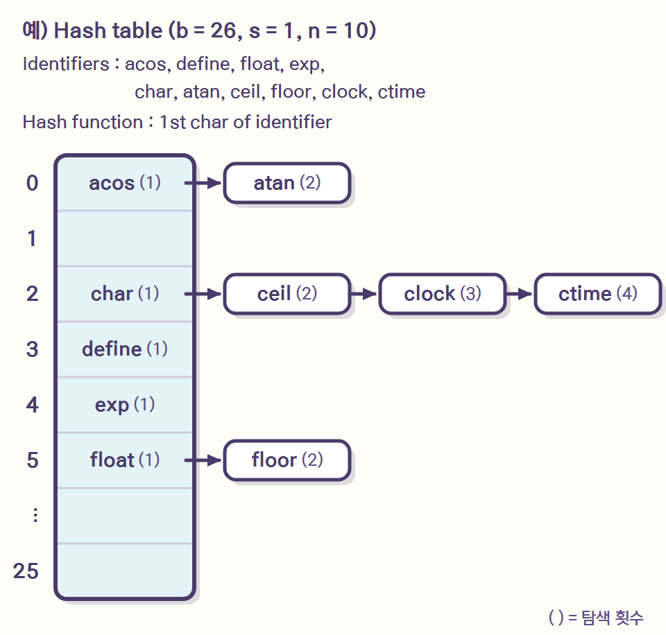
| 체인법 탐색 |
|---|
| element* search(int k) { //k를 찾으면 포인터 값을 리턴하고 아니면 NULL 리턴 nodePointer current; int homeBucket = h(k); //ht[homeBucket] 탐색 for (current = ht[homeBucket]; current; current = current->link) if (current->data.key == k) return ¤t->data; return NULL; } |
- 기출 연습
- 2018 기출
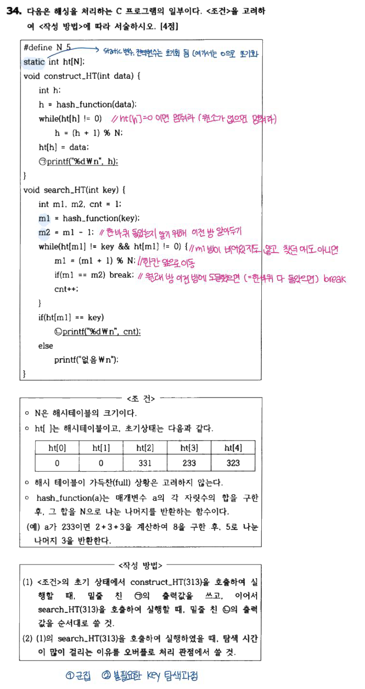
- 2008 기출
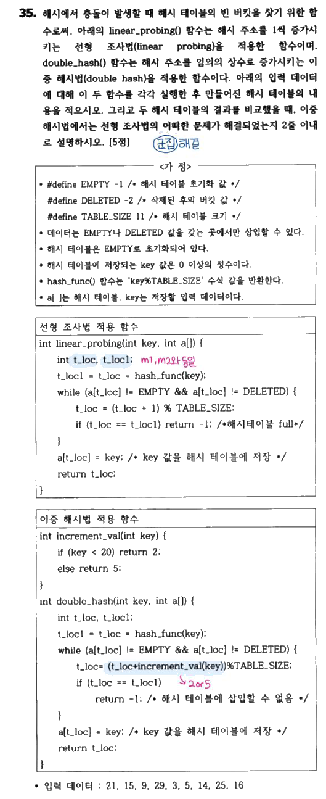
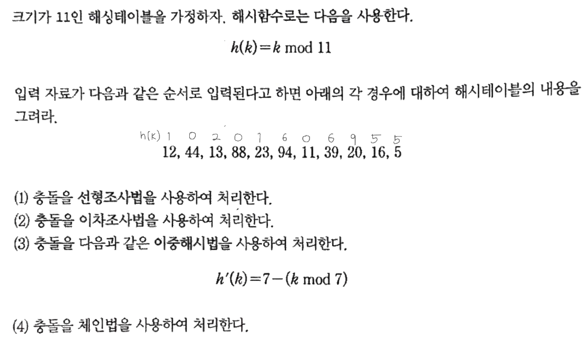
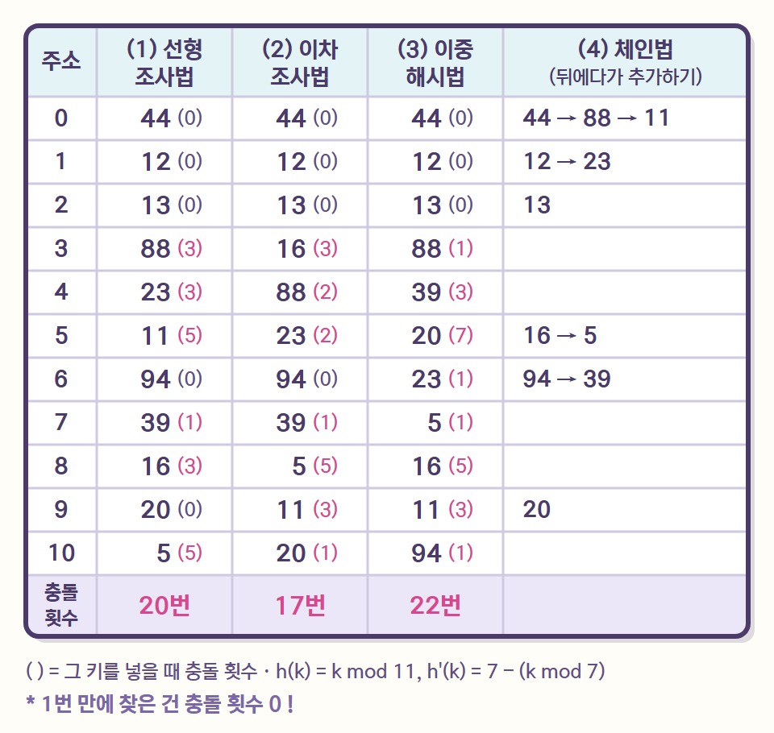
- 2018 기출
![예: 키 5(0101), 8(1000), 11(1011), 7(0111), 6(0110), 15(1111)을 이 순서로 넣는다. depth 1 에서 디렉터리 0 → [8], 1 → [5, 11]이고, 7을 넣으면 오버플로(O.F)가 나서 0101, 1011, 0111 의 하위 비트를 2개로 늘린다.](1-6-2-fig-5.png)